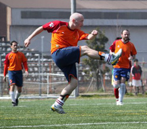
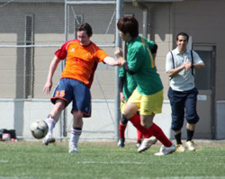
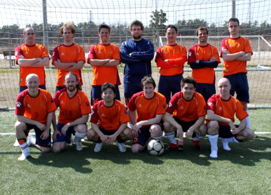

|
Fukuda Denshi, Sunday 14th March.
The squad was looking a little different than last week, with Tomoki working, Ginger Iain back in Brum and Steinson cavorting in the land of nervous sheep and curious farm-hands. On the plus side back in were “Dangerous” Dan Bard, “Feisty” Fernando Bermudez and “Aggressively Mobile” Adz McCann so the team wasn’t in any danger of being under strength. The sun was shining, everyone was remarkably genki considering the early start and we had plenty of fans in tow! It was only when we got to the pitch that we realized the “fans” we had accumulated were here to watch some mob called JEF united play later that day. Well, their loss.
Last time out Guarana had shipped 10 goals with one in reply but no-one expected lightning to strike twice especially since they had just recorded their first victory of the season the previous week. However on his way back from the toilet Adz had scoped out the Guarana whiteboard and had seen they appeared to be playing 3 up front with 2 men playing behind them which appeared to be a quite cavalier if not suicidal approach against a team that had notched double figures last time they met. Captain Bates lined up the team with a “tired” Bauer in nets, Dan at LB, Chris at RB with the old faithful of Kenichi and John at CB, Fernando on the left of midfield, Colin on the right, himself and Sean in the centre with a skilful and speedy combo of Katsu and Ju up front and Adz and Alex on the bench.
Unexpectedly Guarana decided to shoot from the kick-off which although surprising would have worked better if the ball had gotten further than the penalty spot. It was head tennis from the off, Guarana’s attacking 5 swarming all over the second balls from mis-timed headers. Chris and Colin were combining well and stamping their authority down the right and on one occasion won a corner. Sean flighted a high ball in, Bates rose highest and nailed a header downwards that seemed to hit a Guarana players arm but it was no matter as Fernando pounced and volleyed the ball in. 1-0. Guarana attempted another shot at goal from kick off. Nada.
Soon again Colin forged down the right, releasing Katsu who whipped in a delicious far post cross, with Dan and Fernando rushing in unmarked Dan got there first but managed to head the ball over the bar. Maybe his head is as square as his chiseled jaw. No-one seems to remember the second goal, but it was the general consensus that Fernando scored it. How? Again no-one is sure but personally I’m sure I saw him volley it in with his arse. 2-0. Seemingly cruising, subs were made early and on came Alex for John and Adz for Colin. Straight from the kickoff Guarana had another dig at goal but it was more likely to trouble the yakitori salesman outside the stadium than Bauer’s goal. Soon the ball was back in the George half and from a throw in on the right, chaos ensued with several people jumping for the one ball, it breaking to the opposition forward, Bauer saving well and Guarana tapping in form 6 yards. 2-1.
After some constructive criticism from Bates’ George pulled things together again. Adz appeared to be suitably inspired as he approached a 50/50 ball with the Guarana winger leaving him in a crumpled heap on the ground. As if looking like John Locke wasn’t enough for Adz, it appears he’s now taken to behaving like him too. Switching play to both flanks Dan and Fernando were finding far too much space down the left, the ball broke to Katsu who beat the defender and passed the ball into the net past the keeper’s right. 3-1 and back on track. Then suddenly from a seemingly innocuous throw-out, Bauer threw the ball Johnward bound, sadly he wasn’t looking, Guarana got the ball, Bauer saved but the rebound was duly netted. 3-2 and Guarana looked full of confidence.
After the kind of rage and verbal abuse usually only found in a Tarantino movie from Bauer vented towards all and sundry the George took notice and started to keep the ball on the deck where the Guarana midfield were slow to intercept. Colin moved up front and John moved back into defence. Soon Katsu was through again but instead of shooting opted to pass to an unmarked Colin, sadly his pass didn’t quite make it and the keeper collected. The way the opposition was defending there was always going to be another chance and sure enough Chris played a delightful lofted pass to Colin outside the box which he flicked into the box, Katsu ran on to it and fired left past the keeper. 4-2.
Most of the damage was being done down the flanks with Dan perpetually closer to the Guarana box than his own and Adz getting past his man a few times but unable to cross. Not to be thwarted Colin received the ball from Fernando Fernando on the left, jinked between 3 defenders like a thinner, balder Archie Gemmil and slotted the ball in the near post. 5-2 and a fine individual effort.
At half-time Adz moved to RB, Dan to the right of midfield and this is where the fun begins. Some of you may remember the Bardmeister’s goal scoring double salvo last time these teams met, the rest of us have just tried in vain to erase any memory of it. Tiring in the midday sun and devoid of any substitutes Guarana were leaving the flanks undefended and were soon to pay the price, or were they? The ball broke down the left, Katsu crossed the ball across the penalty spot to an unmarked Dan who side-footed wider than one of the tires on Bates’ first tractor. Cue much laughter and derision from both teams. Only minutes later an exact carbon copy maneuver allowed Katsu the chance to cross to Dan again, 9 other people on his team wouldn’t have but he did, and this time Dan trapped the ball, looked up, through up some blades of grass to check the wind direction and passed the ball into the net. 6-2 and a surprising goalscorer, almost as surprising as where he got the grass from considering Fukuda Denshi is an artificial pitch.
Soon after Katsu found himself in his usual position against the final defender but this time he pushed the ball too far and the keeper collected well. 3 minutes later he didn’t make the same mistake, this time rounding the keeper and earning himself the match ball. 7-2. Unusually complacency was once more beginning to set in and the George midfield had more holes than a George Lucas script allowing Guarana’s flying Blitzkreig of forwards to somehow bobble the ball between the centerbacks, pass it across the helpless Bauer and score an all too easy goal. 7-3, sloppy.
Katsu hat-trick had angered someone, and it wasn’t the Guarana keeper. Dan was playing like a man possessed, a man possessed by some kind of bizarre footballing giraffe and as he galloped down the right he shaped for a far-post cross but instead delicately arrowed the ball over the keeper and into the net. Or so he said. 8-2 and another double salvo for the Bard-O-tron.
Sensing danger, Katsu decided that he wasn’t to be outdone and once again burst through the Guarana defence like that big sheet of paper at the end of the travelator on ITV’s Gladiators and poked the ball past the keeper. 9-3, four for Katsu.
Contenders ready, the George continued to apply non-stop pressure to Guarana backline and in one period of play delivered 4 crosses in a row from right to left and then back again that miraculously neither attacker or defender could reach. Winning a corner from this on the right, Sean played it short to Adz who had ample time to roll the ball forward, look up and see Dan grinning like Jack Nicholson in The Shining at the back-post with eyes that just screamed “ME, ME, ME!!!”. Adz, scared of the repercussions if he didn’t, obliged and sent across a “Laser Pass” ©Kenichi, Dan managed to crouch down below the crossbar and nod into the net. 10-3, an amazing and instantly forgettable hat-trick for El Bardinho.
Soon it was all over and hands were shook after a well-fought game. Although a great result the downsides for the George were conceding 3 stupid, sloppy goals and even worse ending the game with Bates up front.
Report by James Bates

|